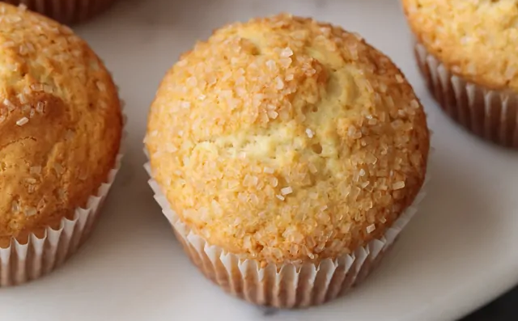

Simple Muffins

Description
This siple muffin recipe is delicious and versatile. It doesn't require any fancy ingedients and the muffins are delicious on their own, but you can also fancy them up with some brown sugar, jam, fruit, or nuts!
Ingredients
- 2 cups (260 g) all-purpose flour
- ½ cup (100 g) granulated sugar
- 2 teaspoons baking powder
- ½ teaspoon salt
- ¾ cup (180 ml) milk, room temperature
- ½ cup (114 g) unsalted butter, melted and cooled
- 2 large eggs, room temperature
- 2 tablespoons coarse sugar, optional
Steps
- Preheat the oven to 350°F. Line a muffin pan with paper liners; set aside.
- In a small bowl, whisk the flour, sugar, baking powder, and salt together.
- In a medium bowl, whisk the milk, butter, and eggs together until well combined.
- Add the flour mixture and stir with a silicone spatula just until combined.
- Divide the batter evenly between the muffin cups and sprinkle the tops with coarse sugar if using.
- Bake for 20-25 minutes, or until a toothpick inserted into the center comes out with only a few moist crumbs attached.
- Transfer muffins to a wire rack to cool completely. Muffins are best the day they are made but they can be stored for later use.